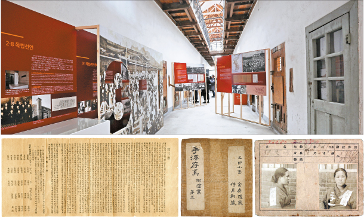

“When that day comes…”
The anticipation of the day Korea would finally be liberated from Japan was what was on the minds of the activists
who bravely took to the streets carrying the Korean flag and chanting “Manse” during the peaceful independence
demonstration on March 1, 1919. Many of these activists - young, old, women and men alike - were arrested by
Japanese officers and put behind bars at Seodaemun Prison, which still stands today in its original state in western
Seoul as a museum.
Although it has served as a museum since 1992, the building has been preserved to allow visitors to feel the actual
ambience of the prison such as it was 100 years ago. Its dark corridors and damp concrete walls still make the chill
of winter feel even colder. The rooms are suffocatingly small and the thick wooden doors that bear multiple locks still
look rock-solid a century later. Around 3,000 people were imprisoned in the prison for participating in the movement
in 1919, sentenced to as many as 12 years and charged for sedition and violating the National Security Law.
One of those people was Sim Hun (1901-36), who wrote the poem titled “When That Day Comes” (1930), which expresses his hope
for liberation's arrival.
“When that day comes / Mount Samgak will rise and dance / the waters of Han will rise up / If that day comes before I perish
/ I will soar like a crow at night / and pound the Jongno bell with my head,” the poem starts.
“The day that such activists like Sim anticipated so much arrived 74 years ago,” said Chung Jae-suk, the chief of the Cultural
Heritage Administration, as she concluded her recitation of Sim’s poem. “So many independence activists made that day finally
come at risk of their lives and thanks to them, that day is just another day for Koreans today.”
But this year, the Cultural Heritage Administration wanted to remember the day by organizing a special exhibition inside the
Seodaemun Prison History Museum to mark the 100th anniversary of Korea’s March 1 Independence Movement that led to the
establishment of a provisional government in Shanghai. The exhibition, titled “That Day 100 Years Ago in Cultural Heritage,”
which kicked off on Feb. 19, is set up at Zone 10 and 12 where prisoners related to the March 1 Independence Movement and the
establishment of the provisional government were confined.
The exhibit features handwritten documents, letters, newspaper clippings, remittance receipts for money that was used for
independence activities, a handwritten Declaration of Independence and other such items that belonged to independence
activists. These documents are registered as pieces of cultural heritage.

“When I stepped into the prison cells for the exhibit, the icy wind chilled me to the bone and I suddenly got teary thinking about the independent fighters who were confined and even died in such a place,” said Chung. “We hope to remember what happened 100 years ago and what these independence fighters did for us and the country through the cultural heritage they left us.” The exhibit is divided into two sections. The first part sheds light on the March 1 Independence Movement and its fighters in the corridors of Zone 10 where activists such as Yu Gwan-sun were confined. The second part of the exhibit, which deals with the establishment of the provisional government, is exhibited in Zone 12, which is where prisoners related to the provisional government, such as Kim Gu, were held. In preparation of the anniversary, the Cultural Heritage Administration has been securing documents, photographs and articles related to two of Korea’s most significant historical events for many years and has been registering them as pieces of cultural heritage. There are 56 articles related to the events at the exhibit. Some of the highlights include the artifacts of activist Hwang Hyeon (1855-1910), which will be disclosed to the public for the first time. Hwang was one of the major Confucian scholars of the late Joseon Dynasty (1392-1910), a poet and an independence activist. Not long after the Japanese annexation of Korea on Sept. 7, 1910, Hwang committed suicide as an act of resistance against Japanese imperialism. His “Suicide Poem” was published in the Gyeongnam Ilbo newspaper shortly afterward. The poem reads: “Indeed, I do not have the duty to die, but this country has nourished scholars for five hundred years. On the day that the country falls, if there is not even one person that perishes in this time of difficulty, would that not be deplorable?... / Chaos and confusion have trickled down, reaching my white-haired age. / How many times have I tried to take my life, but have yet not done so? / Today, truly and verily, how can I not? / Glimmering and sparkling, the windy candlelight illuminates the blue skies.” Hwang’s grandson personally brought a collection of books known as “Daewolheonjeolpilcheop,” which includes the “Suicide Poem” along with his other handwritten poems for the exhibition.